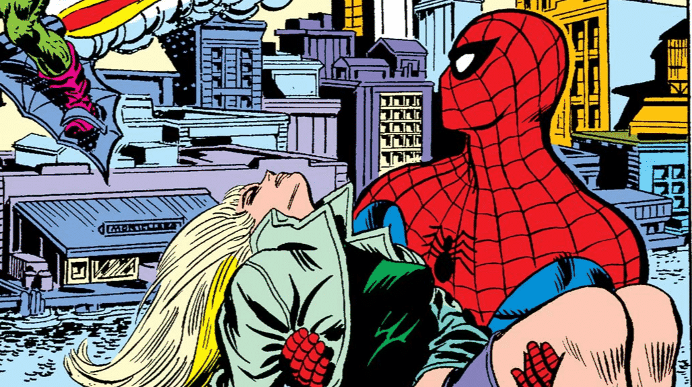

Amazing Spider-Man #121-122
Amazing Spider-Man #121-122
A morte de Gwen até hoje tem repercussões na vida do Aranha. Além disso, é uma das cenas mais revisitada nos quadrinhos, sendo até adaptada para os filmes do teioso. De tão importante, até hoje a verdadeira Gwen nunca foi ressuscitada (mas clonada em compensação, vish). Sem sombra de dúvidas, o roteiro corajoso de Gerry Conway, os desenhos de Gil Kane e a finalização de John Romita, fizeram a mais importante história do Homem Aranha de todos os tempos. 

 vitor.dias@sptech.school
vitor.dias@sptech.school